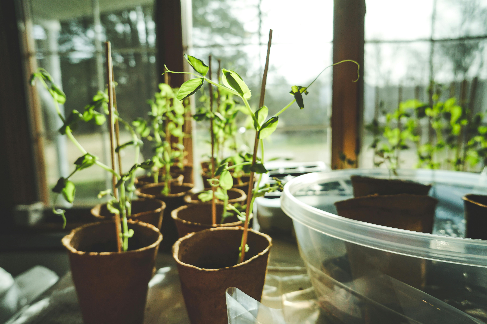
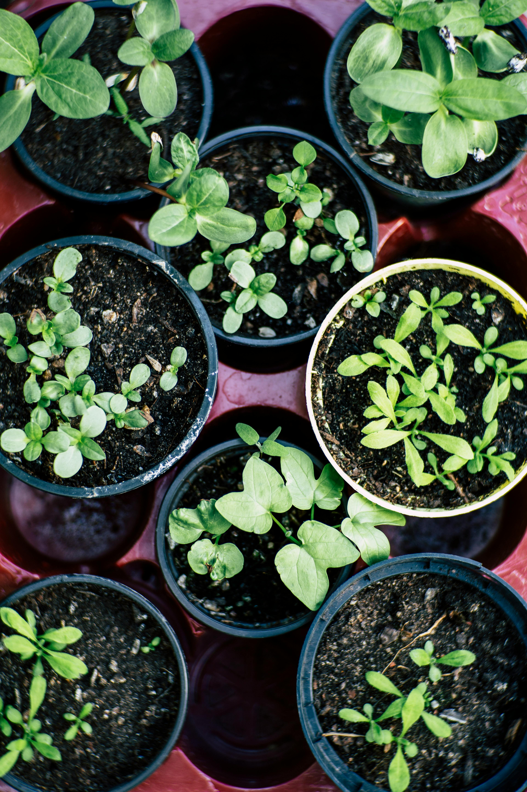
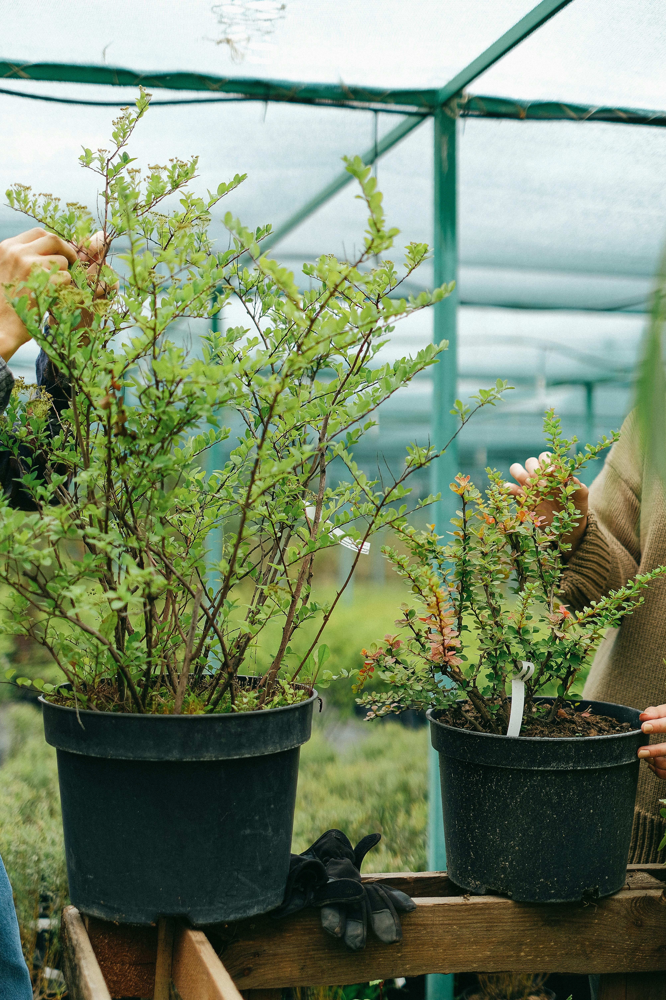
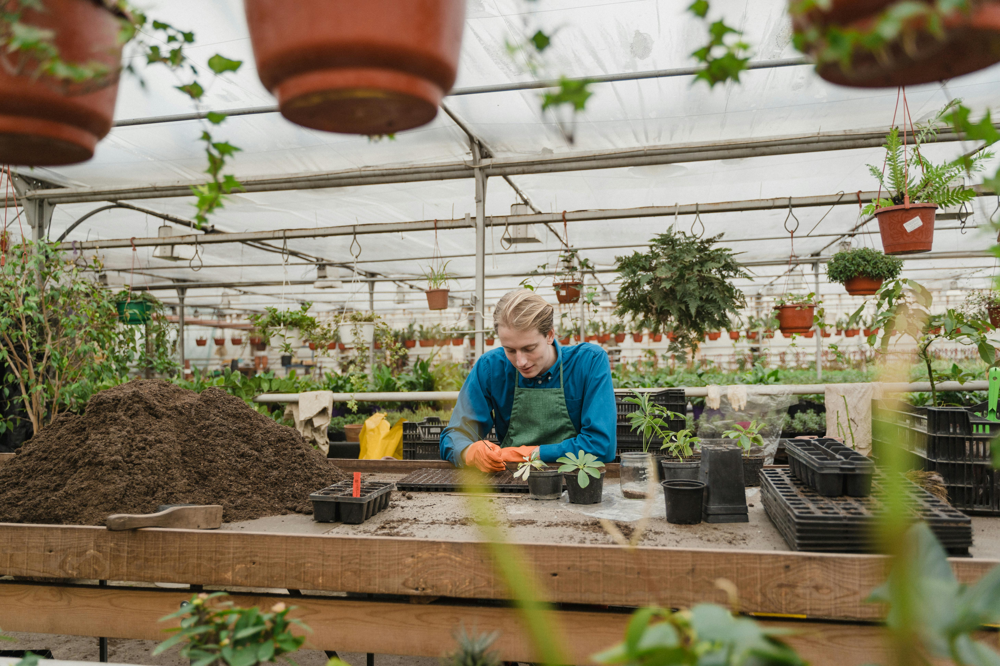

Las plantas orgánicas son aquellas que se cultivan sin usar pesticidas, fertilizantes artificiales, ni otros químicos. La agricultura orgánica se basa en respetar los ciclos naturales de la tierra y en utilizar recursos naturales.


